| 日付 | 2024年2月3日（土） |
|---|---|
| 山域 | 奥多摩 |
| メンバー | 単独 |
| 山行形態 | 日帰り |
| アクセス | 車、バス |
| ルート (Map) | 川乗橋 (9:24) - (11:14) 笙ノ岩山 - (12:30) 蕎麦粒山 (12:55) - (14:10) 天目山 - (15:44) 東日原駐車場 |
蕎麦粒山は長沢背稜の先にある、東京都と埼玉県の境にある山だ。
奥多摩に属する山で、登山者の数はあまり多くない。
数少ない奥多摩で登り残している山だ。
東日原バス停近くの駐車場に車を停める。

協力金500円。
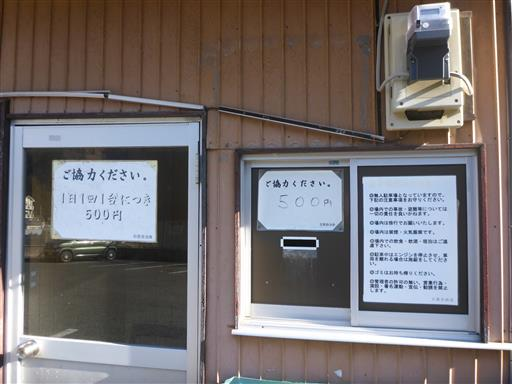
東日原バス停から川乗橋までバスで移動。標高425m。
この時間帯に奥多摩駅方面に向かう人がいる訳はなく、乗客は自分一人だ。
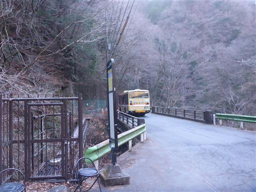
川乗橋の近くに鎮座する地蔵。
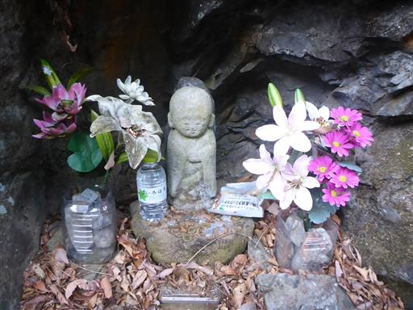
林道を歩き始めてすぐに、蕎麦粒山に向かう登山道がある。
いままで川苔山に登った時に2回ここを通ったが、ここに登山口があることに気づかなかった。
本日も左側を意識していたのに通り過ぎてしまう。
とっても分かりにくい登山口だ。
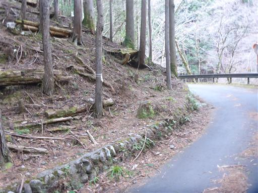
よく見ると一応小さな標識が置かれている。
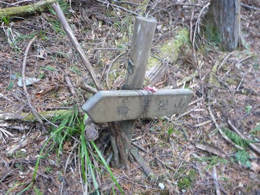
最初は植林地帯の中の登りだ。
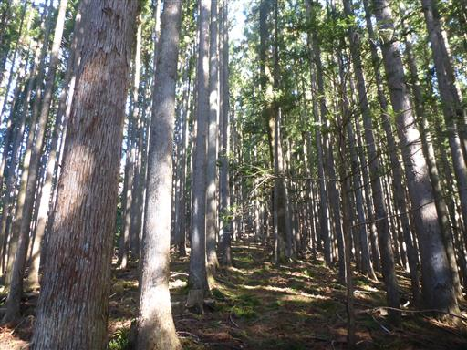
上の方まで登ると落葉樹になる。落ち葉が積もっていて、滑って登りにくい。
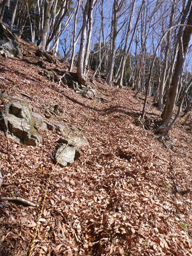
急坂を登りきると明るい尾根道になる。
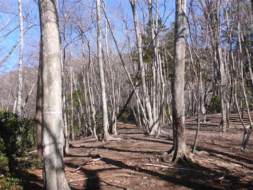
立派なブナの木。
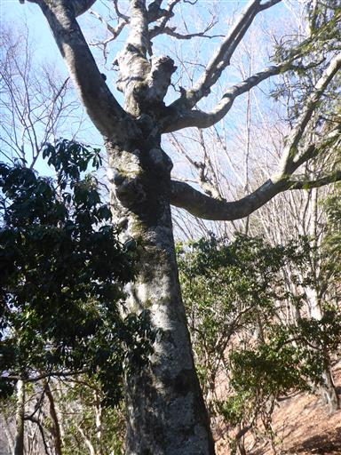
笙ノ岩山に到着。標高1255m。
道のりは半分程度だが、標高はここまででだいぶ登ってきた。
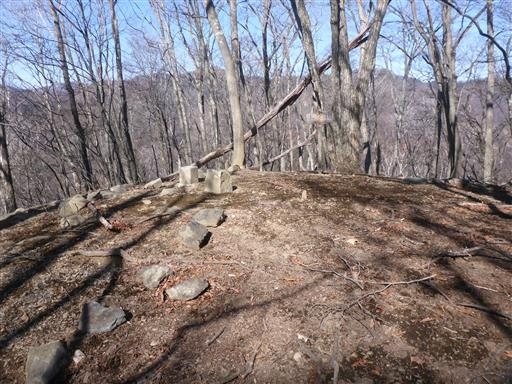
途中で二股に分かれている木。
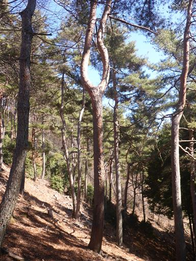
この辺りは松の木が多い。背後に奥多摩の山々が見えている。
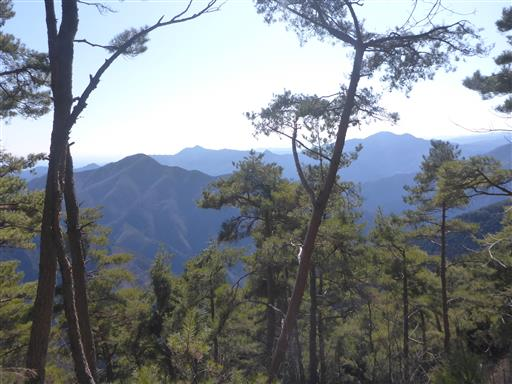
ところどころで巨大な倒木が道を塞いでいる。
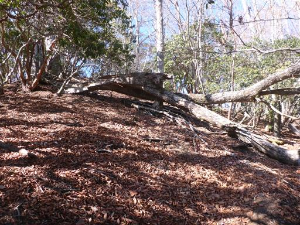
傾斜の緩い尾根道が続く。この辺りは体力的に楽だ。
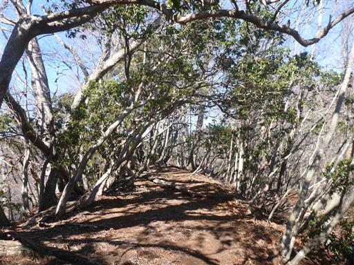
枝の数がとても多い木。

目指す蕎麦粒山が見えてきた。あと一登りだ。
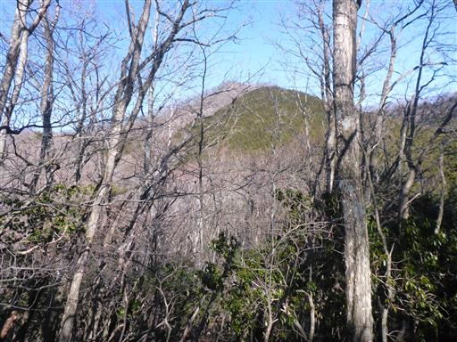
山頂が見えてきた。
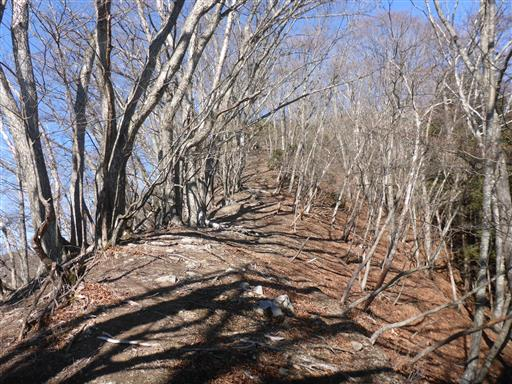
蕎麦粒山山頂到着。標高1473m。
ここまで誰とも出会わなかったが、山頂では5～6人の登山者と出会う。
みんなどこから登ってくるのだろう？
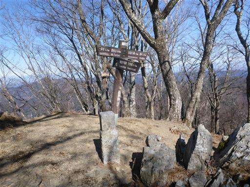
展望は一角のみ開けている。
川苔山方面に向かう長大な尾根が続いている。
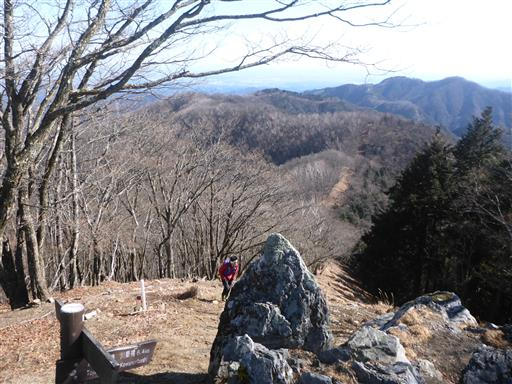
昼食をとったら山頂を出発する。尾根の北側は若干雪が見られる。
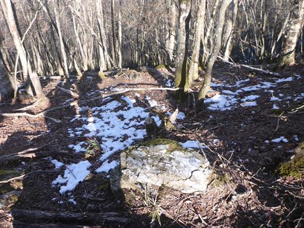
仙元峠に到着。ピークを越える珍しい峠だ。
秩父と多摩を結ぶ唯一の峠だったらしい。
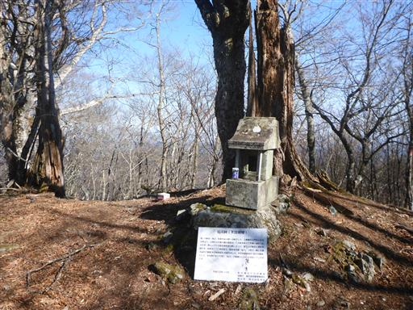
遠く真白な浅間山が見えている。
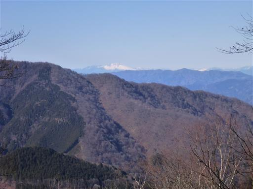
蕎麦粒山と天目山を結ぶ尾根は、ほとんどが尾根の南側を巻いている。
体力的には楽だが展望が広がらない。
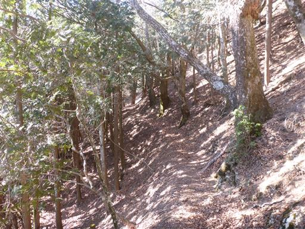
棒杭尾根ルートは閉鎖されている。
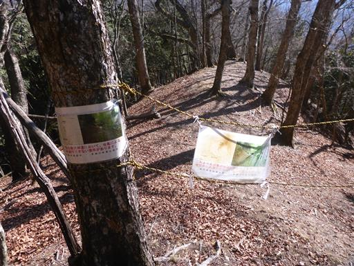
木の真ん中に丸いこぶを持った木。
真ん丸なボールを持っているように見える。
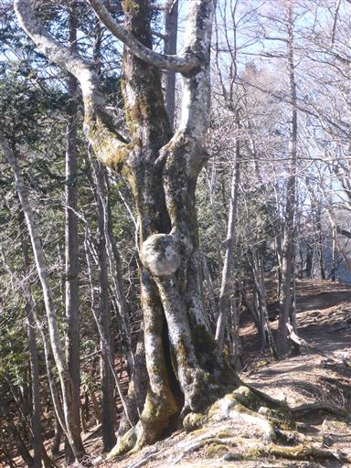
天目山を指し示す標識はないが、ここから登山道を外れて天目山を目指す。
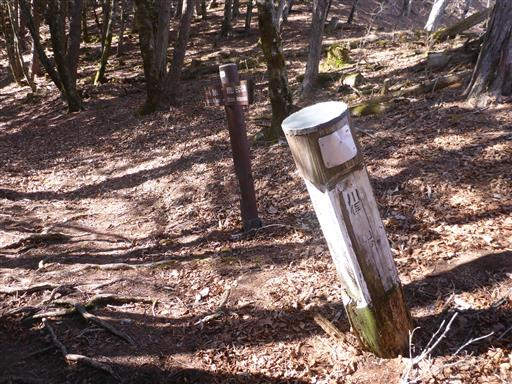
急斜面の尾根を登る。一応踏み跡はある。
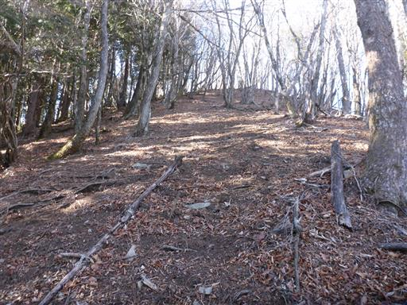
天目山に到着。標高1576m。9年振りの訪問だ。
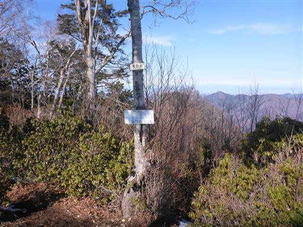
この山は展望が良い。今日一番の展望が広がる。
雲取山から続く石尾根が目の前に横たわっている。
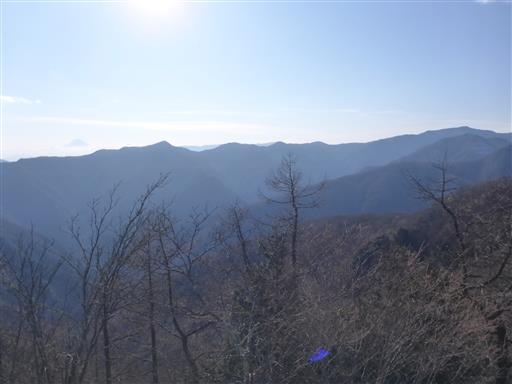
鷹ノ巣山の左には富士山の頭が見えている。
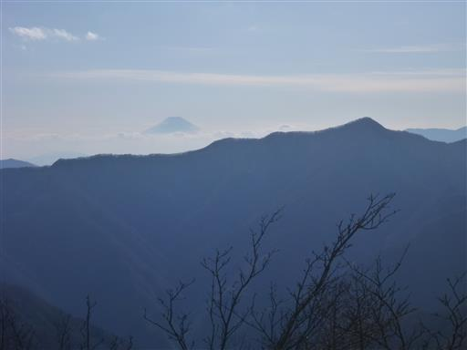
歩いてきた方向を望む。左のピークが蕎麦粒山だ。
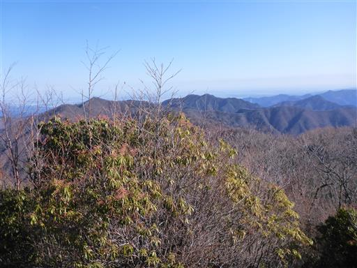
北には男体山など日光の山が微かに見えている。
展望を満喫したら下山する。

一杯水避難小屋を通過。
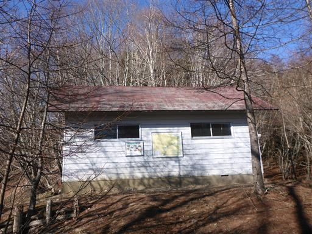
急斜面のトラバース道に滑りやすい落ち葉が大量に堆積しているため、歩きにくい。
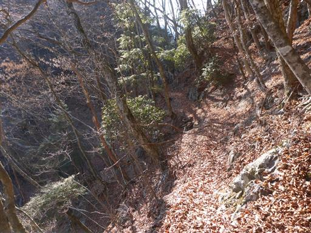
下界近くになると植林地帯になる。
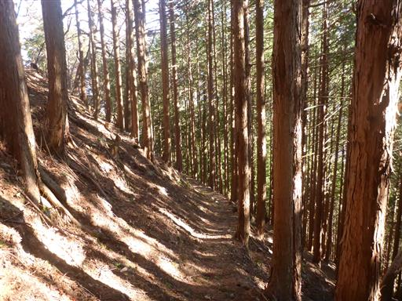
日原の集落が見えてきた。
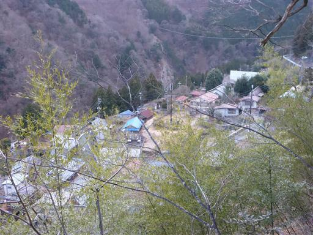
東日原バス停に下山。トイレに寄って駐車場に戻る。
人が少なく、静かでよい尾根道のコースだった。
そんなにロングコースな訳ではないのだが、運動不足がたたってかなり疲れてしまった。
もう少し山に行く頻度を上げていかなければいけない。
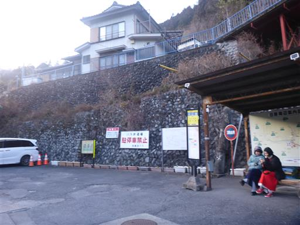